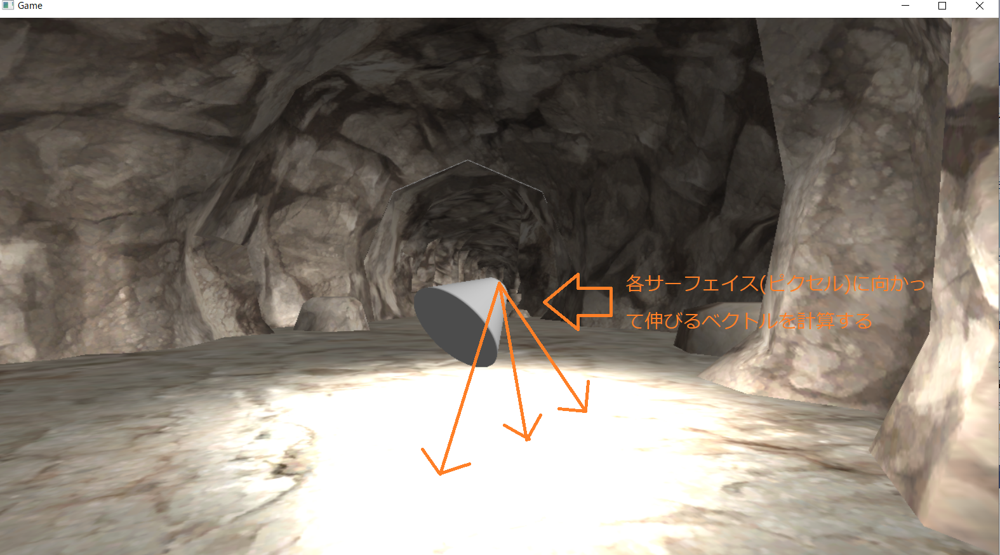
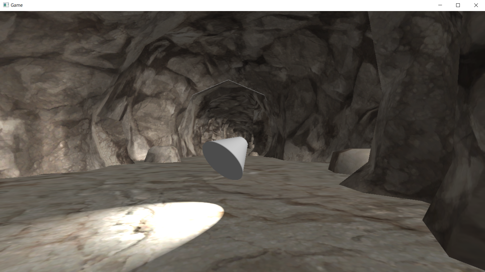

このチャプターではこのようなスポットライトを実装していきます。しかし、だだし、本来スポットライトというのは、空気中の塵を照らすため、光の筋が見えるような現象も見えるのですが、ここで実装するポイントライトは物体に照射された光のみの実装になります。(図5.5)
このチャプターではこのようなスポットライトを実装していきます。しかし、だだし、本来スポットライトというのは、空気中の塵を照らすため、光の筋が見えるような現象も見えるのですが、ここで実装するポイントライトは物体に照射された光のみの実装になります。(図5.5)このチャプターでは、次のサンプルプログラムを利用します。ダウンロードをしてください。 Sample_05_02.zip
スポットライトとはアイドルのライブステージや、スポーツの試合などで使用される図5.4のようなライトです。
図5.4
このチャプターではこのようなスポットライトを実装していきます。しかし、だだし、本来スポットライトというのは、空気中の塵を照らすため、光の筋が見えるような現象も見えるのですが、ここで実装するポイントライトは物体に照射された光のみの実装になります。(図5.5)
図5.5
 今回実装するスポットライトはポイントライトとほとんど同じプログラムになります。ポイントライトのデータに光の放射方向と、光の放射角度を追加することで実装できます。処理の手順としては下記のようになります。
今回実装するスポットライトはポイントライトとほとんど同じプログラムになります。ポイントライトのデータに光の放射方向と、光の放射角度を追加することで実装できます。処理の手順としては下記のようになります。
では、各ステップを詳細に見ていきましょう。
この処理はポイントライトの処理と全く同じです。スポットライトの位置とスポットライトの照射範囲を使ってポイントライトと同じ処理を行います。すると図5.6のようなライティング結果となります。
図5.6

ポイントライトの計算ができたら、図5.7のようにスポットライトの位置からサーフェイスに向かって伸びるベクトルを計算します。
図5.7
 このベクトルは、サーフェイスのワールド座標―スポットライトの座標で求めることができます。また、このベクトルは正規化を行っておく必要があります。
このベクトルは、サーフェイスのワールド座標―スポットライトの座標で求めることができます。また、このベクトルは正規化を行っておく必要があります。
続いて、先ほど求めたベクトルを使って、図5.8のようにスポットライトの射出方向と照射しているサーフェイスの角度を求めます。 図5.8  この角度は内積の下記のような性質を利用すると求めることができます。 正規化された二つのベクトルの内積の結果は、その二つのベクトルのなす角θのcos(θ)の値になる。 なんのことかよく分らないと思いますが、ようはリスト5.13のようなプログラムで、二つのベクトルの間の角度を求めることができるということです。 [リスト5.13]
//ベクトルv1とv2のなす角度を求める。
//まずはv1とv2の内積を計算する。
float t = dot( v1, v2 );
//内積の結果をacos関数に与えて、角度に戻す。
float angle = acos(t);
この性質を利用して、スポットライトの射出方向と照射しているサーフェイスに向かって伸びるベクトルとの内積を求めて、acos()を利用することでサーフェイスとの角度を求めることができます。角度を求めることができたら、スポットライトの照射角度の範囲外は照射しないようにすることで図5.9のようなライティングを行うことができます。
図5.9
最後に3で求めた角度を使ってライトの影響を減衰させます(図5.10)。これはポイントライトの減衰と同じ考え方で、角度が大きくなるにしたがってライトの影響率を下げていくことで実現できます。今回のサンプルではポイントライトの実装と同じようにpow関数を利用することで、指数関数的な減衰を実現しています。
図5.10

では、ハンズオンでスポットライトを実装していきましょう。Smaple_05_02/Sample_05_02.slnを立ち上げてください。
まずは、ライト構造体にスポットライト用のメンバ変数を追加しましょう。スポットライトの実装のために必要なデータは、下記のようになります。
これらのデータをライト構造体に追加していきましょう。では、main.cppの23行目にリスト5.13のプログラムを入力してください。
[リスト5.13 main.cpp]
//step-1 ライト構造体にスポットライト用のメンバ変数を追加。
Vector3 spPosition; //位置。
float pad3; //パディング。
Vector3 spColor; //カラー。
float spRange; //影響範囲。
Vector3 spDirection; //射出方向。
float spAngle; //射出角度。
続いてスポットライトのデータを初期化しましょう。リスト5.14のプログラムを入力してください。
[リスト5.14 main.cpp]
//step-2 スポットライトのデータを初期化する。
//初期座標はX = 0、Y = 50、Z = 0にする。
light.spPosition.x = 0.0f;
light.spPosition.y = 0.0f;
light.spPosition.y = 50.0f;
//ライトのカラーを設定。R = 10、G = 10、B = 10にする。
light.spColor.x = 10.0f;
light.spColor.y = 10.0f;
light.spColor.z = 10.0f;
//初期方向は斜め下にする。
light.spDirection.x = 1.0f;
light.spDirection.y = -1.0f;
light.spDirection.z = 1.0f;
//方向データなので、大きさを１にする必要があるので正規化する。
light.spDirection.Normalize();
//射出範囲は300
light.spRange = 300.0f;
//射出角度は25度。
light.spAngle = Math::DegToRad(25.0f);
射出角度はラジアン単位で指定する必要があります。今回は著者のほうで用意している、デグリー角度からラジアン角度を求めるMath::DegToRad()を利用して角度を設定しています。
ライトの初期化ができたら今度はゲームループの中にコントローラーの入力でスポットライトを移動させるプログラムを追加しましょう。リスト5.15のプログラムを入力してください。
[リスト5.15 main.cpp]
//step-3 コントローラーの左スティックでスポットライトを移動させる。
//左のアナログスティックで動かす。
light.spPosition.x -= g_pad[0]->GetLStickXF();
if (g_pad[0]->IsPress(enButtonB)) {
//Bボタンが一緒に押されていたらY軸方向に動かす。
light.spPosition.y += g_pad[0]->GetLStickYF();
}
else {
//Z軸方向に動かす。
light.spPosition.z -= g_pad[0]->GetLStickYF();
}
続いて、コントローラーの右スティックの入力でスポットライトを回転させましょう。リスト5.16のプログラムを入力してください。
[リスト5.16 main.cpp]
//step-4 コントローラー右スティックでスポットライトを回転させる。
//Y軸周りの回転クォータニオンを計算する。
Quaternion qRotY;
qRotY.SetRotationY(g_pad[0]->GetRStickXF() * 0.01f);
//計算したクォータニオンでライトの方向を回す。
qRotY.Apply(light.spDirection);
//X軸周りの回転クォータニオンを計算する。
Vector3 rotAxis;
rotAxis.Cross(g_vec3AxisY, light.spDirection);
Quaternion qRotX;
qRotX.SetRotation(rotAxis, g_pad[0]->GetRStickYF() * 0.01f);
//計算したクォータニオンでライトの方向を回す。
qRotX.Apply(light.spDirection);
このコードではクォータニオンを利用してライトの方向を回すプログラムを作成していますが、クォータニオンの説明は本書の目的である、リアルタイムCGプログラミングのアルゴリズムを学ぶという点からずれてしまい、数学的な話になってしまいますので、詳細な説明は割愛させていただきます。本書では、クォータニオンは任意の軸周りの回転を扱うことができ、ベクトルを回したり、回転行列を作成したりすることができる程度の認識で大丈夫です。
続いてシェーダー側のプログラムを実装していきます。まずは、cpp側で用意されたスポットライトのデータにアクセスするための変数を定数バッファに追加しましょう。Assets/shader/sample.fxを開いてリスト5.17のプログラムを入力してください。
[リスト5.17 sample.fx]
//step-5 スポットライトのデータにアクセスするための変数を追加する。
float3 spPosition; //スポットライトの位置。
float3 spColor; //スポットライトのカラー。
float spRange; //スポットライトの射出範囲。
float3 spDirection; //スポットライトの射出方向。
float spAngle; //スポットライトの射出角度。
では、ここからはピクセルシェーダーを改造して、スポットライトの計算を行っていきます。step-6～step-10までのプログラムはポイントライトと全く同じになります。では、まずは、スポットライトからサーフェイス(ピクセル)に入射してくる光の向きを計算しましょう。リスト5.18のプログラムを入力してください。
[リスト5.18 sample.fx]
//step-6 このサーフェイスに入射しているスポットライトの光の向きを計算する。
//ピクセルの座標 - スポットライトの座標を計算。
float3 ligDir = psIn.worldPos - spPosition;
//正規化して大きさ１のベクトルにする。
ligDir = normalize(ligDir);
入射してくる光の向きを計算することができたら、拡散反射光を計算します。リスト5.19のプログラムを入力してください。
[リスト5.19 sample.fx]
//step-7 減衰なしのランバート拡散反射光を計算する。
float3 diffSpotLight = CalcLambertDiffuse(
ligDir, //ライトの方向
spColor, //ライトのカラー
psIn.normal //サーフェイスの法線
);
続いて鏡面反射光を計算しましょう。リスト5.20のプログラムを入力してください。
[リスト5.20 sample.fx]
//step-8 減衰なしのフォン鏡面反射光を計算する。
float3 specSpotLight = CalcPhongSpecular(
ligDir, //ライトの方向。
spColor, //ライトのカラー。
psIn.worldPos, //サーフェイズのワールド座標。
psIn.normal //サーフェイズの法線。
);
減衰なしの反射光を求めることができたので、次は距離による減衰率を計算します。この計算もポイントライトのものと全く同じです。リスト5.21のプログラムを入力してください。
[リスト5.21 sample.fx]
//step-9 距離による影響率を計算する。
//スポットライトとの距離を計算する。
float3 distance = length( psIn.worldPos - spPosition );
//影響率は距離に比例して小さくなっていく。
float affect = 1.0f - 1.0f / spRange * distance;
//影響力がマイナスにならないように補正をかける。
if( affect < 0.0f){
affect = 0.0f;
}
//影響の仕方を指数関数的にする。今回のサンプルでは3乗している。
affect = pow( affect, 3.0f );
距離による影響率を求めることができたので、反射光に影響率を乗算して、反射光を弱めましょう。リスト5.22のプログラムを入力してください。
[リスト5.22 sample.fx]
//step-10 拡散反射光と鏡面反射光に影響率を乗算して影響を弱める。
diffSpotLight *= affect;
specSpotLight *= affect;
ここからはスポットライト固有のプログラムになっていきます。まずはサーフェイスへの入射光とスポットライトの射出方向との角度を求めましょう。この角度は内積と逆余弦関数を利用することで求めることができます。では、リスト5.23のプログラムを入力して下さい。
[リスト5.23 sample.fx]
//step-11 入射光と射出方向の角度を求める。
//dot()を利用して内積を求める。
float angle = dot( ligDir, spDirection);
//dot()で求めた値をacos()に渡して角度を求める。
angle = acos(angle);
角度を求めることができたら影響率を計算しましょう。この計算の考え方は、距離によるものとよく似ています。角度の大きさに比例して影響率を小さくしていきます。また、影響率を累乗することで、影響率の変化を指数関数的にしています。これも距離によるものと同じ考え方です。リスト5.24のプログラムを入力してください。
[リスト5.24 sample.fx]
//step-12 角度による影響率を求める。
//角度に比例して小さくなっていく影響率を計算する。
affect = 1.0f - 1.0f / spAngle * angle;
//影響力がマイナスにならないように補正をかける。
if( affect < 0.0f){
affect = 0.0f;
}
//影響の仕方を指数関数的にする。今回のサンプルでは0.5乗している。
affect = pow( affect, 0.5f );
求めた影響率を反射光に乗算して、影響率を弱めましょう。リスト5.25のプログラムを入力してください。
[リスト5.25 sample.fx]
//step-13 角度による影響率を反射光に乗算して、影響を弱める。
diffSpotLight *= affect;
specSpotLight *= affect;
いよいよ最後の実装です。スポットライトの反射光を最終的な反射光に足し算しましょう。リスト5.26のプログラムを入力してください。
[リスト5.26 sample.fx]
//step-14 スポットライトの反射光を最終的な反射光に足し算する。
finalLig += diffSpotLight + specSpotLight;
ここまで実装できたら実行してみてください。図5.11のようなプログラムが実行できたら完成です。コントローラーの入力でスポットライトを動かすことができますので、こちらも試してみてください。
図5.11 
次の評価テストを行いなさい。 評価テストへジャンプ